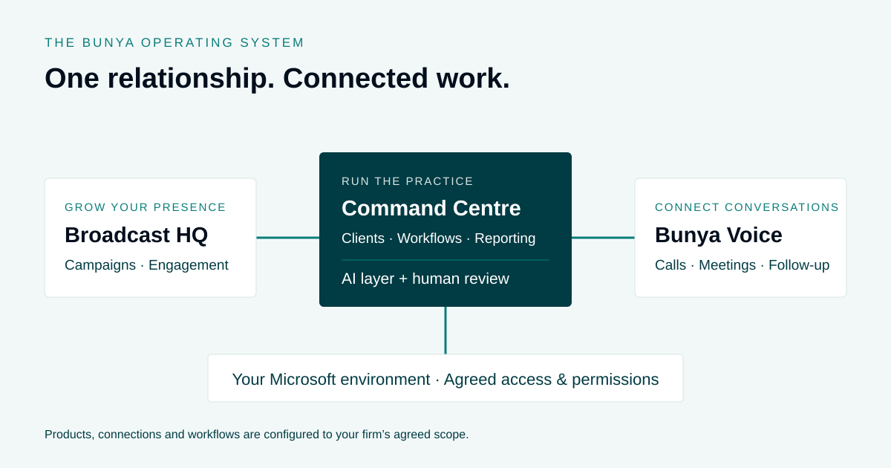

Systems & ownership
Financial Advice Practice Management Software: What Is a Practice Operating System?
A connected approach to the records, conversations and workflows behind your practice.

Start with the work, not the tool list
A client relationship crosses more than a contact record. There are enquiries, meetings, documents, advice tasks, approvals and reviews. When the links between these activities depend on someone remembering what happened, the team spends time reconstructing context.
Map one client journey before choosing software. Note where information starts, who needs it next and what tells them they can proceed. That map gives you a more useful brief than a list of features.
Connect three parts of the practice
In Bunya, Command Centre supports client records, advice work, reviews and reporting. Broadcast HQ supports campaigns and connected engagement. Bunya Voice connects supported calls and meetings to account context and reviewed follow-up.
These products form the wider system. The connections, permissions and workflows are defined in the firm’s Blueprint rather than assumed to be identical for every practice.
Give AI a defined role
AI can help prepare notes, drafts and agreed actions using the relevant context. It works best as part of a clear process: establish the inputs, describe the intended output and identify who reviews it.
A reusable skill can organise that process, but does not make every output correct. Human approval and exception handling are part of the design, particularly when information is incomplete.
Ask how the system will be maintained
A connected system still needs ownership of the day-to-day operation. Agree who manages access, maintains integrations, resolves exceptions and approves changes.
Compare the implementation and ongoing responsibilities together. A useful operating system is one the team can understand, support and adapt as the practice changes.
A worked example: from enquiry to follow-up
Consider a prospective client who responds to a campaign and books a discovery meeting. This is an illustrative workflow, not a customer result or a promise that every integration is included by default.
- Start the conversation. The firm reviews a campaign in Broadcast HQ and schedules approved content through a supported channel. A response creates a follow-up opportunity.
- Assign the next step. Under the agreed enquiry process, the team creates or updates the relevant record in Command Centre, checks for duplicates and gives someone responsibility for the conversation.
- Keep the meeting context. For an eligible meeting, Bunya Voice organises supported recording and transcript artefacts in SharePoint. A confident account match links the context; uncertain matches go to review.
- Prepare, then check. AI prepares eligible notes and a follow-up draft. An authorised person checks the source, corrects the draft and approves what is sent.
- Carry the work forward. The agreed next action has an owner and a place in the client workflow. The team can see what is outstanding without reconstructing the conversation.
The useful connection is the handover: each person knows what they have received, what they need to check and what happens next.
What should you compare with your current setup?
A well-configured CRM may already support workflows and integrations. Compare the actual process in your firm rather than assuming that a product category tells you what it can do.
| Area | What to check |
|---|---|
| Client context | Can authorised staff find the relevant records, documents and conversation history? |
| Handover | Is the next action assigned, with clear completion criteria and a route for exceptions? |
| AI preparation | Are the inputs, output, reviewer and permitted actions defined? |
| Connections | Which steps are connected automatically, and which require a person to transfer or confirm information? |
| Ownership | What components, access and documentation are delivered, and what ongoing dependencies remain? |
A checklist for your next software demonstration
Bring a real process, using sample or appropriately prepared information. Ask the provider to show the following:
- A complete journey, including the handover between two team members.
- What happens when a required document is missing or the client match is uncertain.
- What different roles can see and change.
- How an AI-generated draft is checked, rejected or corrected.
- The distinction between features shown in the demo and those included in your proposed build.
- The migration, training, licensing and support responsibilities after go-live.
Record the answers against your requirements. A clear scope is more useful than an impressive demonstration with unanswered questions about daily use.
Common questions
Is a practice operating system a single application?
It can bring several applications and services into one connected operating approach. In Bunya, the three products share an agreed Microsoft foundation and workflow design; the Blueprint defines the actual connections.
Does it replace every tool in the practice?
Not necessarily. Decide what to retain, replace or integrate based on the firm’s requirements and the available connections. Confirm those decisions before committing to a build.
Can you start with one workflow?
One workflow is a useful starting point for discovery and evaluation. The implementation sequence and any staged rollout are then agreed in your Blueprint.